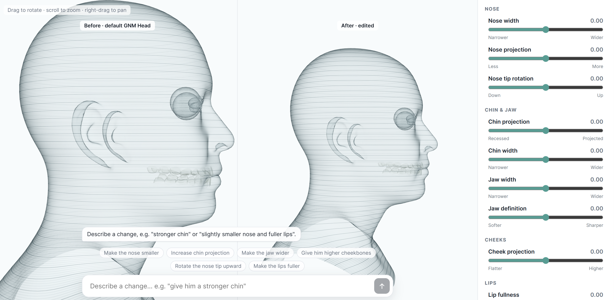

In progress
Plastic Surgery Planning
An AI model that shows patients a before-and-after preview of their plastic surgery. Changes can be described in plain language to an LLM, like “rotate the nose tip upward,” or made by hand with simple sliders for the nose, chin, jaw, cheeks, and lips.